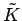
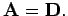
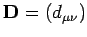
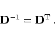
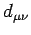
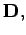
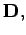
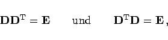
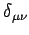
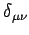

Inhalt Index DeskTop Bronstein

 Lineare Algebra Tensoren Transformation des Koordinatensystems
Lineare Algebra Tensoren Transformation des Koordinatensystems


Wenn das kartesische Koordinatensystem  aus K durch Drehung hervorgeht, dann gilt in (4.65) für die Transformationsmatrix  Dabei ist  die orthogonale Drehungsmatrix. Die orthogonale Drehungsmatrix  hat die Eigenschaft
hat die Eigenschaft
|  | (4.67a) |
Elemente  von  sind die Richtungskosinusse der Winkel zwischen den alten und neuen Koordinatenachsen. Aus der Orthogonalität der Drehungsmatrix  d.h. aus
sind die Richtungskosinusse der Winkel zwischen den alten und neuen Koordinatenachsen. Aus der Orthogonalität der Drehungsmatrix  d.h. aus
|  | (4.67b) |
folgt für ihre Elemente:
Diese Gleichungen besagen, daß die Zeilen- und Spaltenvektoren der Matrix  orthonormiert sind, denn  ist das KRONECKER-Symbol.
orthonormiert sind, denn  ist das KRONECKER-Symbol.
Die Elemente der der Drehungsmatrix können auch mit Hilfe der EULERschen Winkel dargestellt werden (s. auch Drehung der Ebene und Drehung im Raum).